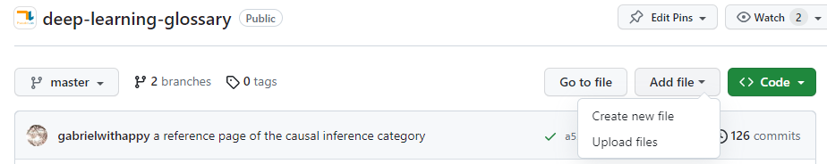
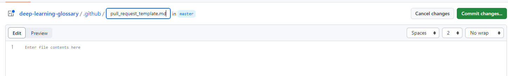
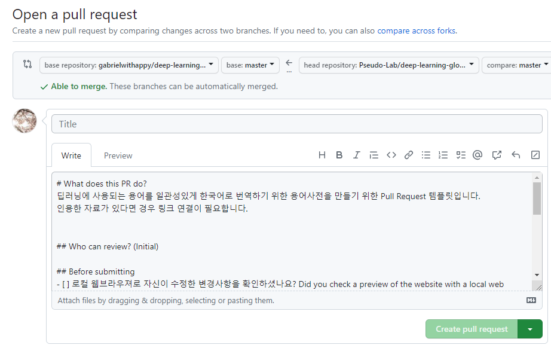

Github Pull Request 템플릿 적용하기
Github Pull Request 템플릿 적용하기
DevOps
Github Pull Request 템플릿을 적용하는 방법을 정리합니다.
Github Pull Request 템플릿 적용하기
Github의 Pull Request 진행 시 적용되는 문서 탬플릿을 작성하고 적용하는 방법을 정리합니다.
Pull Request 탬플릿 파일 생성
Pull Request 탬플릿을 작성하기 위해서 탬플릿 문서를 작성합니다.

문서 생성을 위해서 위와 같이 Github 레포지토리 상단의 Add file > Create new file 버튼을 선택합니다.

버튼을 선택하면 파일의 내용과 파일명을 저장할 수 있는 Text Editor 페이지가 위와 같이 생성됩니다. 탬플릿 문서를 특정 위치에 저장됩니다. 이를 위해서 레포지토리 루트폴더에 .github 폴더를 만들고 이 폴더에 pull_request_template.md 파일을 생성합니다.
이 문서 내부에 작성하는 내용은 Pull Request(PR) 을 작성하는 commiter가 PR을 작성하면 이 템플릿의 내용을 Text Editor에 자동으로 추가됩니다. 필요한 내용을 모두 작성했다면 Commit chages 버튼을 눌러 수정한 내용을 저장합니다.
Pull Request 템플릿 결과 확인
PR을 생성할 때 새롭게 작성한 템플릿 내용이 작성되었는 지 확인합니다. 이를 위해서 기본 레포지토리를 Fork해서 수정 내용을 작성하고 Pull Requset 를 진행합니다.

위와같이 PR을 생성하면 템플릿으로 작성한 내용이 기본적으로 제공됩니다. 레포지토리에 머지를 요청할 때 전달할 내용과 확인이 필요한 내용을 탬플릿으로 작성하면 PR리뷰에 필요한 내용을 잘 확인할 수 있습니다.